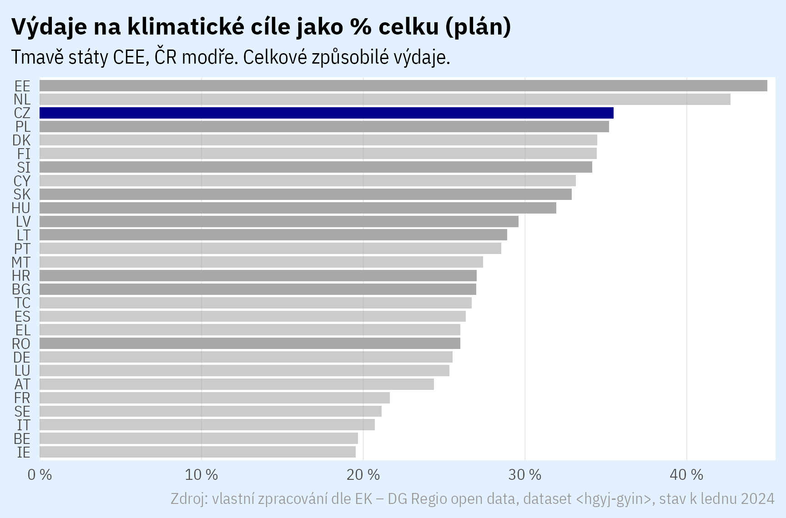
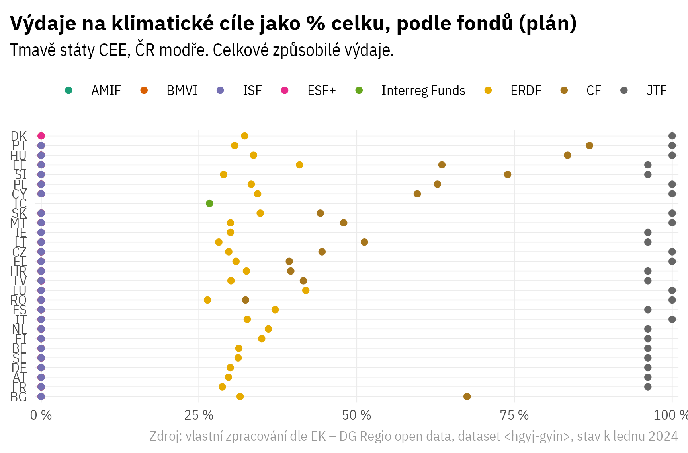
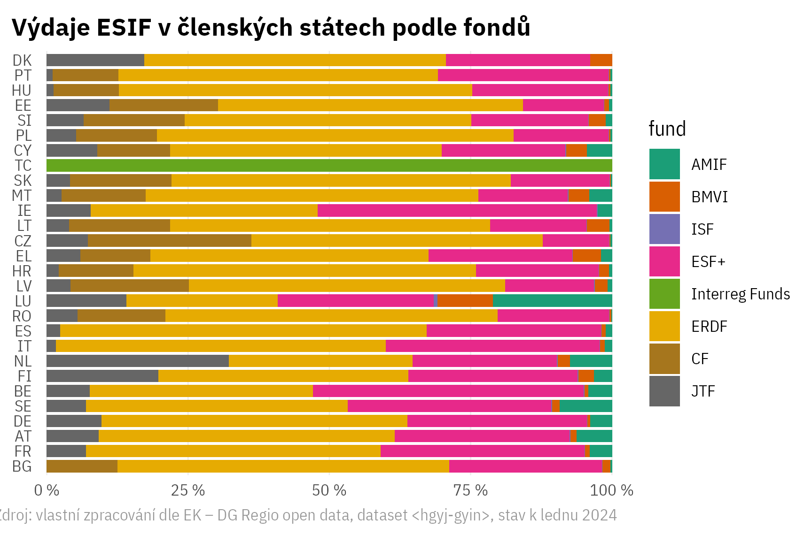
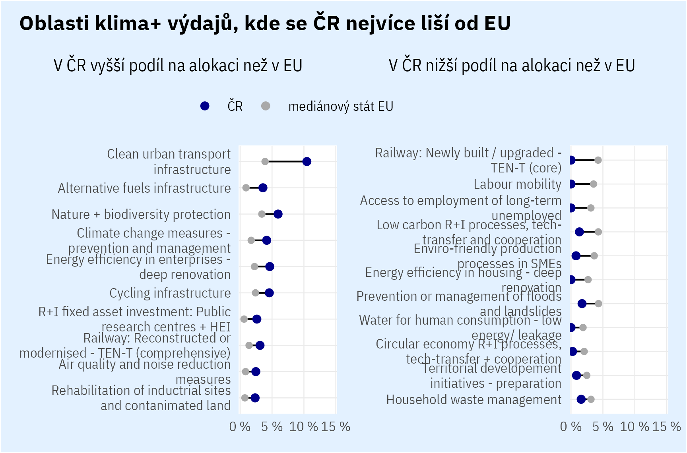
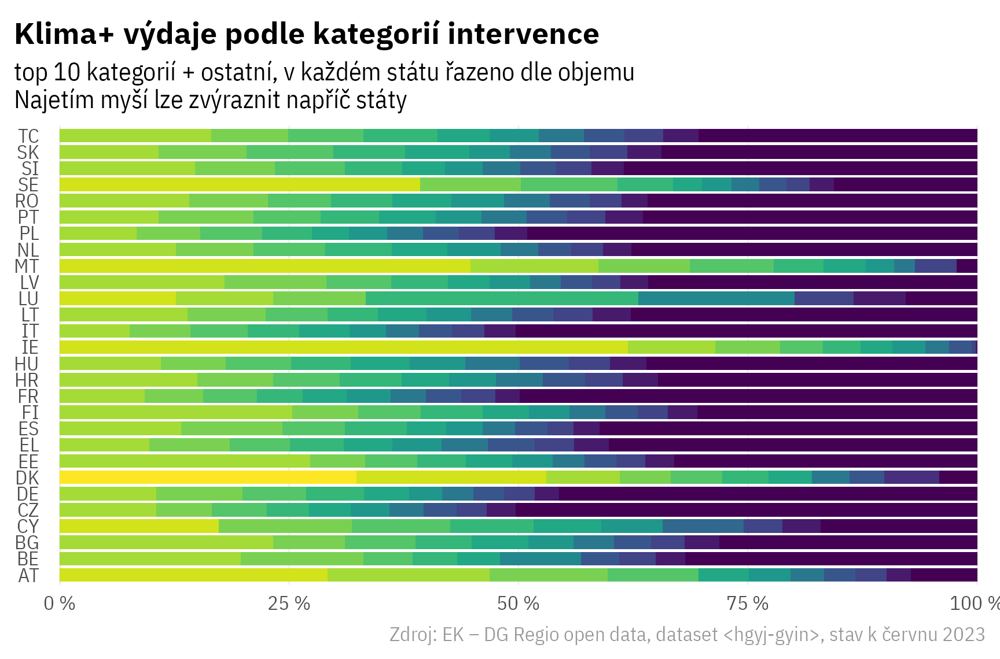
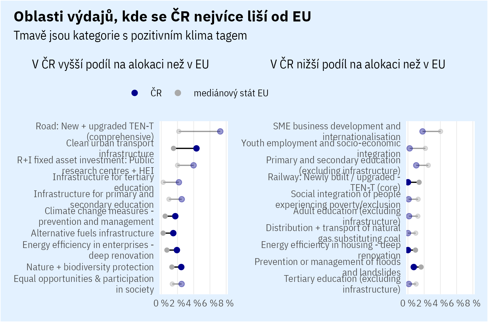
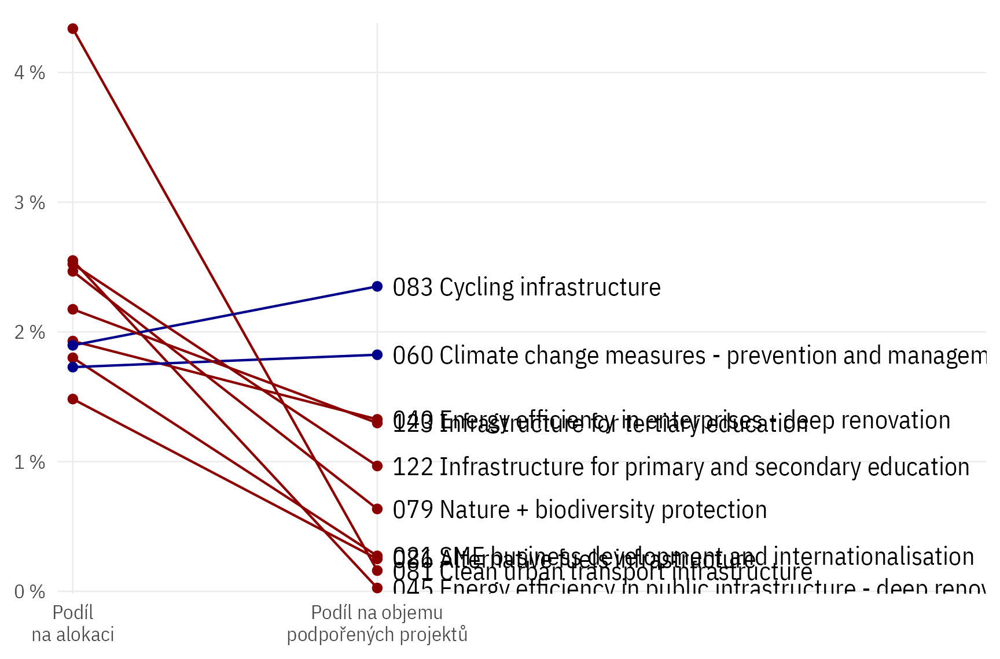
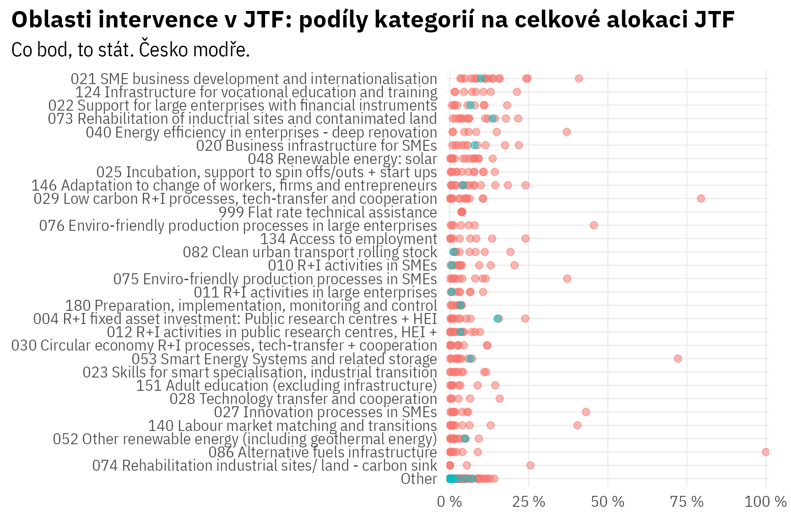
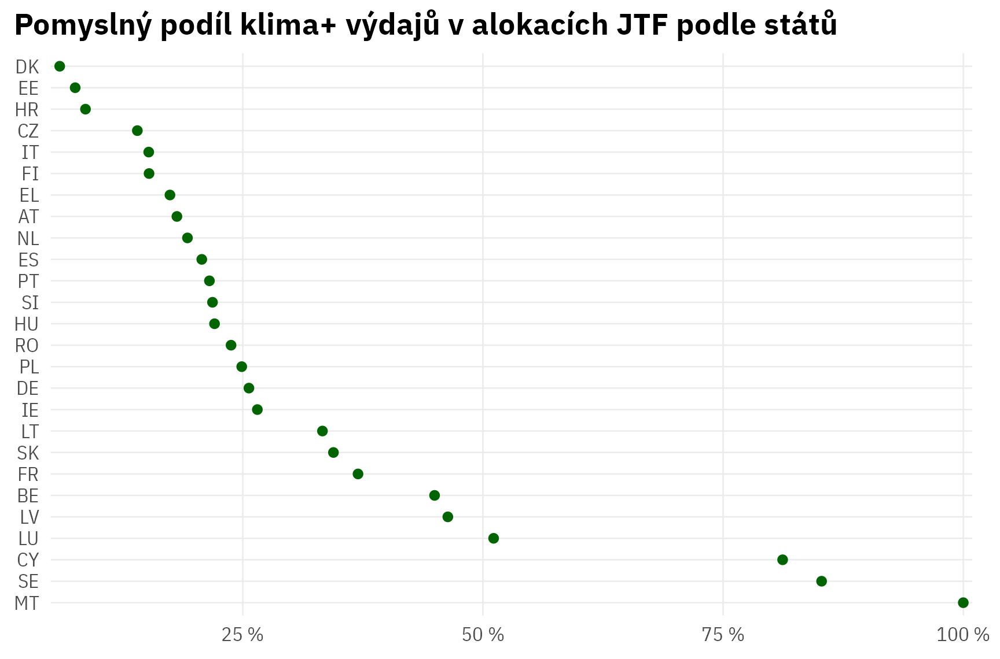

Q: je to tažené rozdílným složením fondů?

Máme vysoký podíl kohezního fondu na celku, v něm relativně nižší podíl klimatu, ale celkově to přispěje k relativně vysokému klimatickému závazku.




Kolik procent alokace činí top 10 kategorií v mediánové zemi?
Jak je na tom ČR ve srovnání?
Takže ČR má výdaje fragmentované mezi mnoho kategorií, je relativně atypická ve vysokých investících do městské dopravy. V top 10 vůbec nemáme zvyšování efektivity budov (kromě veřejné infrastruktury - co se za tím skrývá?)
Česko má nejvyšší fragmentaci klimatických výdajů do témat v Evropě - a podobně velkou mají velké země jako Itálie, Polsko, Francie a Německo.
U klimatických opatření je vidět větší koncentrace napříč EU než u celkové alokace.

Jaké oblasti intervence máme v českém JTF?

Jaké projekty jsou zatím podpořené v JTF?
Kdybychom na alokace v JTF aplikovali stejné climate markery jako na peníze mimo JTF, jaký by byl jeho climate share v jednotlivých státech?

Na co jde JTF v Dánsku, když není skoro vůbec zelené?